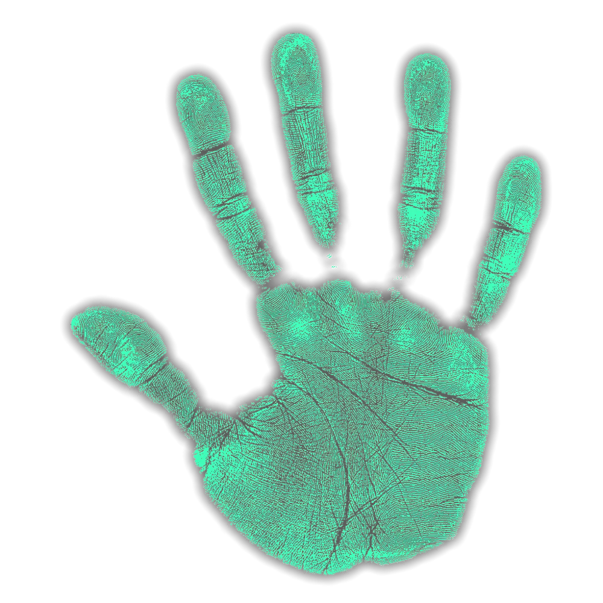

Следи за рассудком так как многие призраки нападаю с 50% рассудка
после обновления пар из рта не считается как минусовая темпиратура

следите за шумом так как призрак может открыть дверь и это может дать улику